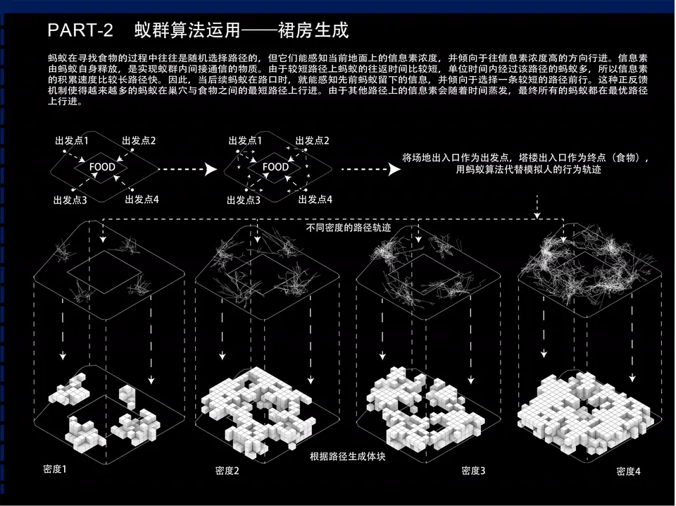
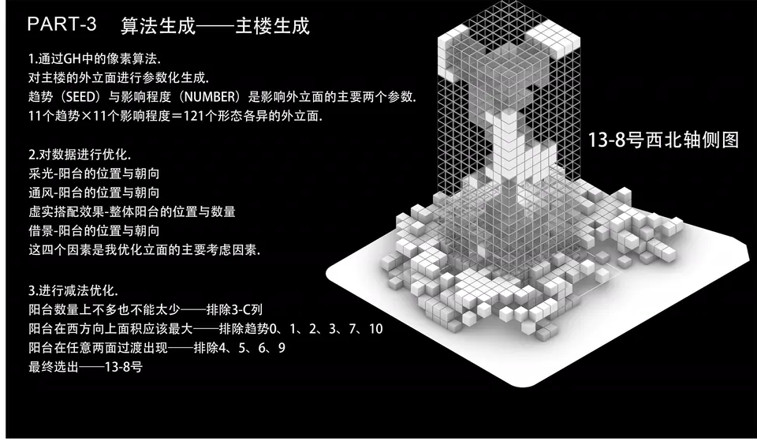
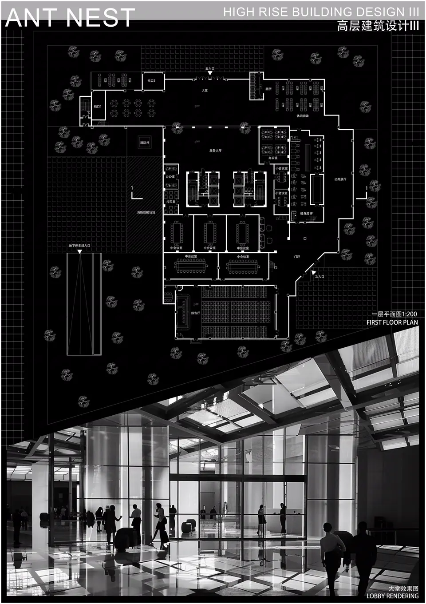
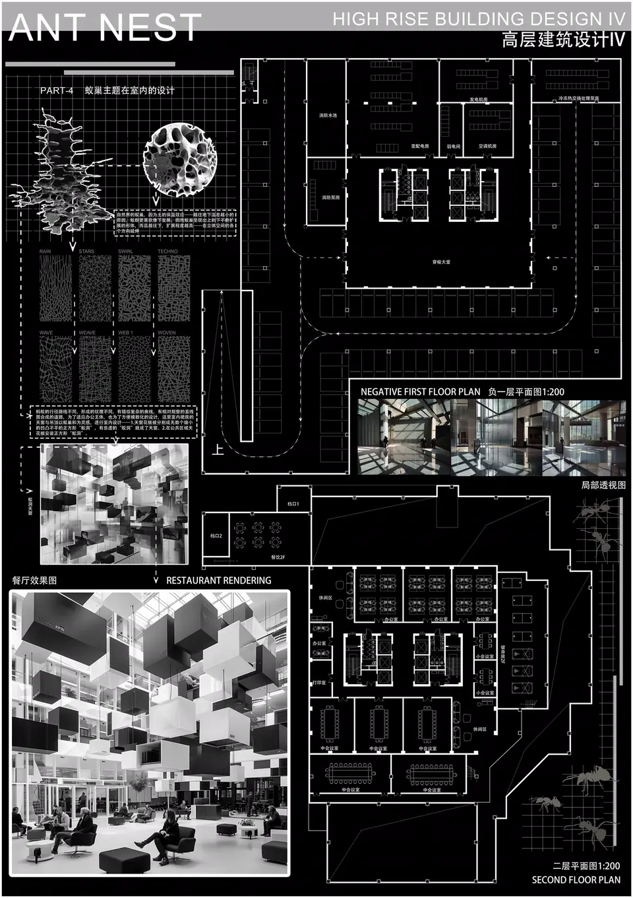
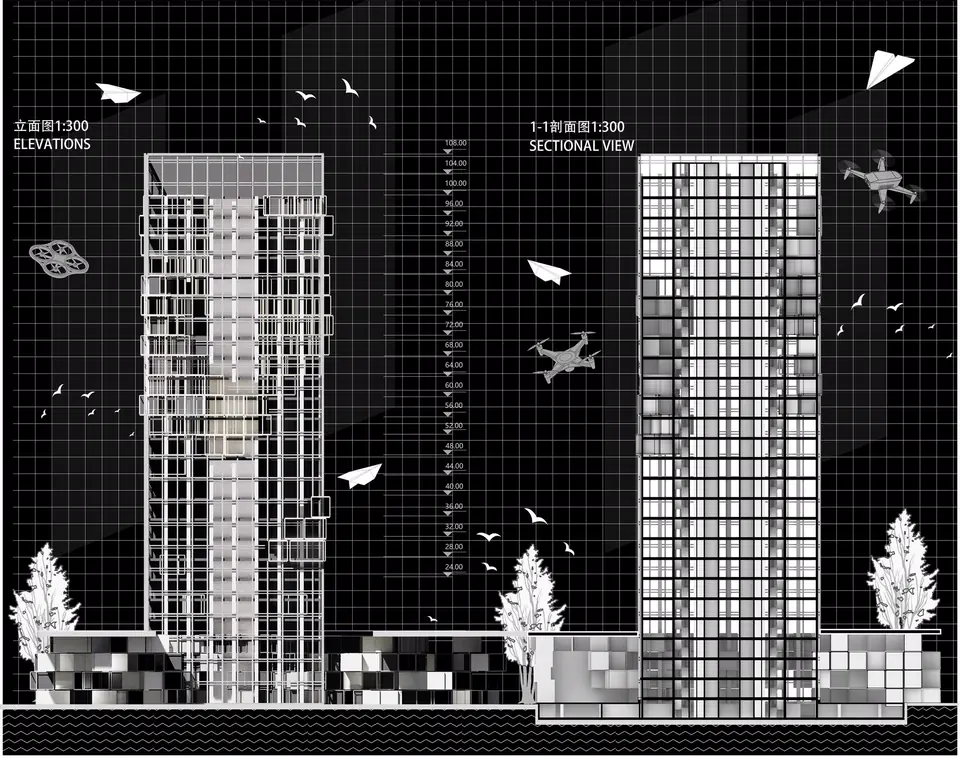

PROJECT 05
高层建筑High-rise Design
蚁群路径、立面筛选与校园门户。Ant-colony paths, facade selection and a campus gateway.
主效果图MAIN RENDERING
「蚁巢」塔楼在山东科技大学东大门区域的城市形象：参数化生成的阳台肌理如蚁巢般附着塔身。
The "Ant Nest" tower at the east gate of Shandong University of Science and Technology: parametrically generated balcony textures cling to the tower like an ant nest.

算法介绍与裙房生成ALGORITHM & PODIUM GENERATION
PART-1 算法介绍：蚁群算法（ACO）由 Marco Dorigo 于 1992 年在博士论文中提出，灵感来自蚂蚁觅食发现路径的行为。PART-2 裙房生成：蚂蚁随机选择路径，但能感知信息素浓度并倾向高浓度方向行进；较短路径上蚂蚁往返快、信息素积累快，正反馈使群体最终行走在最优路径上。将场地出入口作为出发点、塔楼出入口作为终点（食物），用蚂蚁算法模拟人的行为轨迹，得到不同密度的路径轨迹。
Part 1, the algorithm: ACO was proposed by Marco Dorigo in his 1992 doctoral thesis, inspired by ants finding paths while foraging. Part 2, podium generation: ants choose routes at random yet sense pheromone and favour the stronger trail; shorter routes accumulate pheromone faster, and positive feedback steers the colony onto the optimal path. Site entrances become starting points and tower entrances the food, so simulated ants trace human movement as path tracks of different densities.



总平面图MASTERPLAN
总平面图（1:2000）：基地位于山东科技大学东大门区域，总用地面积约 11257 ㎡，总建筑面积 32060 ㎡，建筑密度 72%，绿化率 35.2%。
Master plan (1:2000): the site sits by the east gate of Shandong University of Science and Technology — site area about 11,257 m², GFA 32,060 m², coverage 72%, greening 35.2%.

主楼生成TOWER GENERATION
主楼生成以 GH 像素算法记录采光、通风、虚实与借景四项筛选：排除 3-C 列，再排除趋势为 0、1、2、3、7、10 的方案，随后排除 4、5、6、9，最终在 121 个立面方案中选择 13-8。
The tower study uses a GH pixel algorithm to filter daylight, ventilation, solid-void balance and framed views: column 3-C is excluded, followed by trends 0, 1, 2, 3, 7 and 10, then 4, 5, 6 and 9. Scheme 13-8 is selected from the 121-facade matrix.



一层平面图与一层大堂效果图GROUND FLOOR & LOBBY RENDERING
一层平面（1:200）：大堂、服务大厅、报告厅、公共展厅与健身房组织在裙房首层，附一层大堂效果图。
Ground floor plan (1:200): lobby, service hall, lecture hall, public gallery and gym line the podium, with a lobby rendering.


地下与二层平面、餐厅及室内设计Lower & Second Floors, Restaurant & Interiors
负一层及二层平面图均为 1:200，图版同时呈现设备用房、办公会议、共享空间、餐厅，以及蚁巢主题在室内设计中的延续。
The basement and second-floor plans are both 1:200. The board also presents plant rooms, offices and meeting space, shared areas, the restaurant, and the continuation of the ant-nest theme in the interior.


塔楼标准层平面图TOWER STANDARD FLOORS
塔楼标准层平面（1:300）：办公单元沿核心筒布置，阳台随参数化立面收分组合。
Tower standard floor plans (1:300): office units around the core, with balconies tapering and recombining along the parametric facade.


节点大样图NODE DETAIL
节点大样（1:20）：展示幕墙与阳台的构造关系。
Node detail (1:20): how the curtain wall and the balcony meet.

立面与剖面图ELEVATION & SECTION
立面与剖面图：塔楼的竖向秩序与剖面关系，阳台肌理随立面收分变化。
Elevation and section: the tower's vertical order in section, with the balcony texture tapering along the facade.

